In graad 7 en 8 het jy geleer om metale as ysterhoudend en nie-ysterhoudend te klassifiseer. In hierdie hoofstuk gaan ons die klassifisering van metale hersien.
Jy gaan leer hoe om metale te beskerm en in stand te hou met behulp van die volgende metodes: verf, galvanisering en elektroplatering. As ons materiale en toerusting in stand hou en herwin, sal dit mynbou verminder. En soos jy teen hierdie tyd weet, is mynbou skadelik vir die omgewing.
Ysterhoudend verwys na die teenwoordigheid van yster (die element op die periodieke tabel) in 'n metaal, byvoorbeeld staal. Ysterhoudende metale het oor die algemeen 'n geneigdheid om met suurstof te verbind en hierdie proses word "oksidasie" genoem.
Nie-ysterhoudende metale soos aluminium, koper, sink en goud, bevat geen ystermolekules nie. Hierdie metale is oor die algemeen duurder as ysterhoudende metale.
Jy gaan ook leer hoe om 'n voorwerp te elektroplateer.
7.1 Om metale te verf 96
7.2 Galvanisering 100
7.3 Elektroplatering 103
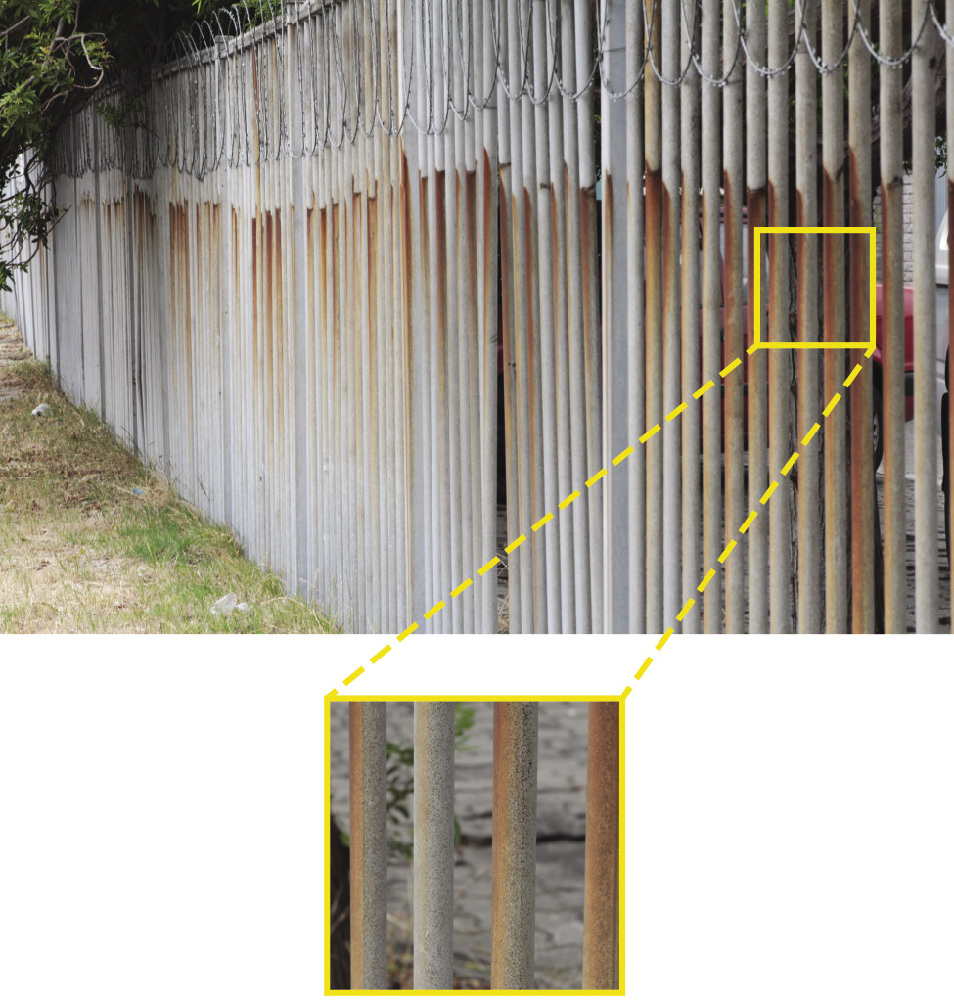
Figuur 1: Voorbeelde van metale besig is om te oksideer of roes
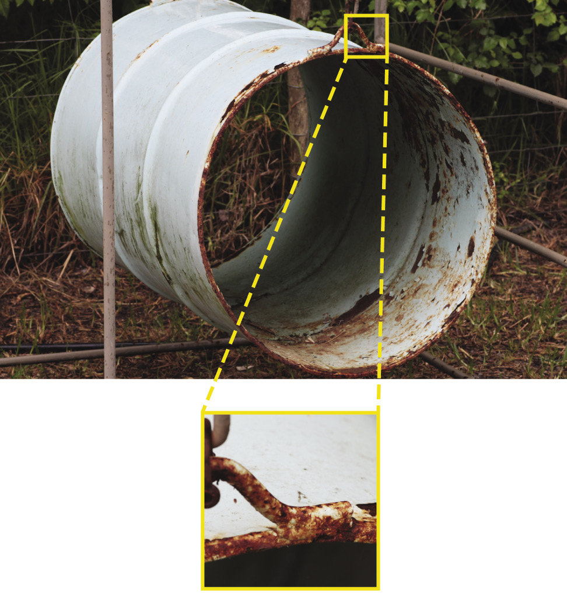
7.1 Om metale te verf
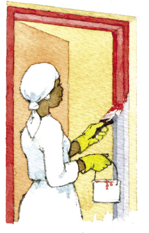
Figuur 2: 'n Dame verf 'n deurkosyn
Alhoewel metale (soos wat ons hulle oor die algemeen waarneem) baie sterk is, vergaan hulle ook oor tyd. Roes is een van die mees algemene maniere waarop metale vergaan. Plante en diere gaan dood, verander in kompos en keer terug na die grond. Wanneer metale roes, breek hulle in kleiner deeltjies af en keer ook terug in die grond in. Soos jy teen hierdie tyd weet, word metale oorspronklik uit die grond gehaal deur mynbou.
Maar wat veroorsaak roes? Wanneer 'n metaal met suurstof reageer, vind daar 'n chemiese reaksie plaas wat ons oksidasie noem. Die gevolg van oksidasie is roes. Ysterhoudende metale het nie weerstand teen roes nie. Hierdie reaksie vind baie vinniger plaas wanneer daar sout of sekere sure in die lug is. Metale by die see roes oor die algemeen baie vinniger as metale in die binneland (sien figuur 3).
Daar is egter goeie nuus. Daar is verskeie maniere om metale teen roes te beskerm. Die goedkoopste manier om ysterhoudende metale teen roes te beskerm, is om die metaal te verf.
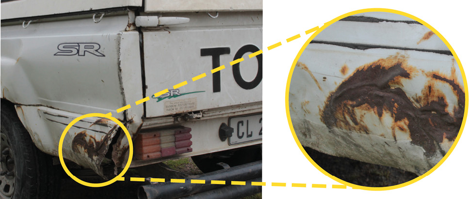
Figuur 3: 'n Geroeste motor by die kus
Wat is die regte manier om metaal te verf? Dit hang af of die metaal splinternuut is en of dit reeds geroes is.
|
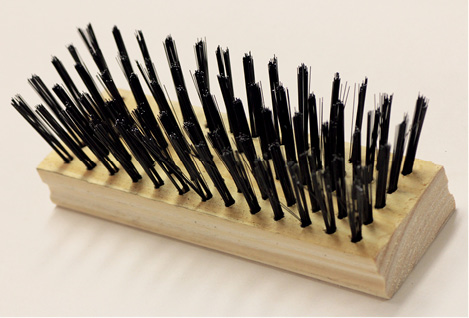 Figuur 4: 'n Staalborsel |
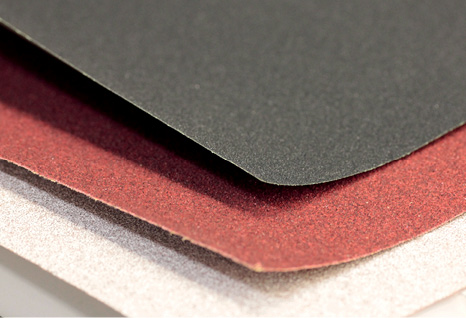 Figuur 5: Skuurpapier |
Indien dit 'n splinternuwe stuk metaal is wat nog nooit geverf is nie, sal die metaal se oppervlak glad wees. Dit is dan beter om die metaal oppervlak eers effens grof te maak. Verf sukkel om aan gladde oppervlaktes te kleef en daarom gebruik ons 'n staalborsel (figuur 4) of skuurpapier (figuur 5) om die oppervlak growwer te maak. Daarna moet jy seker maak dat daar geen stof op die oppervlakte agterbly nie. Gebruik 'n skoon lap om die stof van die metaal af te vee. Dan verf jy een laag (of verkieslik twee lae) onderlaag op. Die onderlaag beskerm die metaal en dit moontlik vir die mooi bo-laag verf om aan die metaal se oppervlak te kleef. Laastens, sodra die onderlaag droog is, kan jy uiteindelik die bo-laag verf.
Om geroesde stukke metaal te verf, is bietjie meer werk. Eerstens moet mens van soveel roes as moontlik probeer ontslae raak. Indien daar ou verf is wat afskilfer, moet mens dit ook verwyder. Mens gebruik 'n staalborsel en skuurpapier om dit te doen. Dit is moeilik om van alle roes ontslae te raak, daarom moet mens n spesiale onderlaag opsit wat die oksidasieproses keer. Indien jy nie so 'n onderlaag opsit nie, kleef die metaal net eenvoudig aan die roes onder die verf vas en die verf skilfer sommer gou af.
Belangrike dinge om in ag te neem wanneer jy verf:
1. Wag tot die laag verf wat jy aanvanklik geverf het heeltemal droog is, voordat jy die volgende laag verf.
2. Maak altyd seker dat die oppervlak wat jy wil verf, heeltemal skoon is. Daar moet geen stof, water of olie daarop wees nie. Stof, water en olie verhoed ook dat verf aan die oppervlak kleef.
Met party soorte roeswerende onderlae moet mens nog 'n ekstra onderlaag bo-op dit ook verf voor mens die bo-laag kan verf. Daarom moet mens altyd die instruksies lees op die spesifieke produk wat jy gebruik. Wanneer mens al die onderlae geverf het, kan jy die bo-laag verf. Nou weet jy hoe om geroesde voorwerpe te herstel en mooi te maak, in plaas van om dit weg te gooi!
Beskerm metale deur verfwerk
Beantwoord die volgende vrae:
1. Maak 'n lys van die materiale wat jy gaan nodig hê om metale te verf.
2. Beskryf kortliks waarom dit nodig is om 'n onderlaag aan te wend wanneer jy 'n metaal verf.
3. Verduidelik kortliks in jou eie woorde waarom skepe en bote die deurentyd geverf moet word.
4. Bestudeer die onderstaande tabel. Kolom A beskryf al die stappe in die verfproses, maar die volgorde is deurmekaar. Skryf die korrekte nommer vir elke stap in kolom B.
|
A |
B |
|
1. Wend twee onderlae aan. Wanneer 'n metaal aan suurstof blootgestel word en ook waterstof verloor, oksideer (of roes) die metaal. Die onderlaag verf maak dat die bo-laag verf aan die metaal se oppervlak vasklou. Dit help ook om die metaal beter teen roes te beskerm. |
5 |
|
2. Skuur die metaal af met 'n staalborsel en/ of skuurpapier. Dit verseker dat die verf goed aan die metaal kan vasklou. Hoe growwer die metaal se oppervlakte, hoe beter sal die verf daaraan vassit. |
2 |
|
3. Wend 'n sink-chroom onderlaag aan indien die metaal geroes is. Skuur en skraap eers soveel roes as moontlik af en wend dan hierdie onderlaag aan. Mens hoef nie noodwendig geroesde metaalvoorwerpe weg te gooi nie. |
4 |
|
4. Verwyder los verf, stof, vetterigheid en ander vuilis van die metaaloppervlak. As mens dit nie doen nie, kan die verf nie aan die staal vaskleef nie. Selfs al lyk die metaal nie vuil nie, moet jy dit nog steeds deeglik afvee. |
1 |
|
5. Verf. Akriel verf is normaalweg die beste verf om vir metaal te gebruik. Dit is duurder as spuitverf of ander metaalverwe, maar dis ook baie meer duursaam. Werk versigtig en wend die verf egalig aan. |
6 |
|
6. Lees die etikette. Maak seker jou onder- en bolaag pas bymekaar. Let ook veral op na die tyd wat die verf neem om droog te word. 'n Mens moet altyd seker maak een laag verf is heeltemal droog voor jy nog 'n laag opsit. |
3 |

7.2 Galvanisering
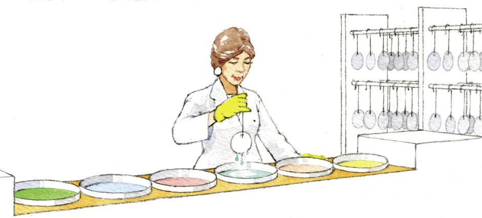
Figuur 6
- •
Daar is twee maniere om metaal te galvaniseer. Die een proses noem ons "dompelgalvanisering". Die ander proses staan bekend as "elektrogalvanisering".
Dompelgalvanisering behels dat die ysterhoudende metaal in 'n bad vol gesmelte sink (met 'n temperatuur van 460°C ) gedompel word. Water kook teen 100°C; so jy kan net dink hoe warm die sink is!
Dit beteken natuurlik dat mens die regte toerusting en veiligheidsmaatreëls in plek moet hê om dompel-galvanisering te doen.
Gesmelte – 'n metaal of rots wat in vloeistof vorm is as gevolg van die hitte.
Dompelgalvanisering het twee groot voordele: dis relatief goedkoop en baie duursaam, omdat dit 'n relatief dik sinklaag vorm. Mens kan voorwerpe wat met hierdie metode gegalvaniseer is, buite gebruik, selfs op die langtermyn (soos 20 tot 50 jaar). Maar daar is ook nadele. Eerstens, is die metaal se voorbereidingsproses nogal kompleks (sien figuur 7). Dompelgalvanisering laat metaal ook dof voorkom en die sinklaag is nie orals ewe dik nie.
Elektrogalvanisering behels dat die ysterhoudende metaal deur middel van elektroplatering met 'n sinklaag bedek word. Julle gaan meer leer oor elektroplatering in die volgende deel van hierdie hoofstuk. Nou hoef julle net te weet dat elektrogalvanisering se sinklaag dunner is as die van dompelgalvanisering dis nie so duursaam nie, maar die dikte is egalig. Die sinklaag blink ook; en mens kan selfs klein voorwerpe maklik elektrogalvaniseer. Dit beteken dat metaal wat op hierdie manier gegalvaniseer is, oor die algemeen binnenshuis gebruik word. Indien mens dit buitekant wil gebruik, sal jy die metaal ook moet verf.
bytsoda oplossing
afspoel
suurbad
afspoel
gesmelte sink bad
afkoeling van sink bad
inspeksie
Figuur 7: Die stappe wat gevolg word in die dompelgalvaniseringsproses
Wat het jy geleer?
Galvanisering is 'n proses wat roes help voorkom. Wanneer mens 'n metaal galvaniseer, beteken dit jy bedek die metaal met 'n laag sink. Sink is relatief goedkoop en, anders as yster, reageer dit nie met lug en vog nie. Die sinklaag beskerm die ysterhoudende metaal teen suurstof en water. Voorwerpe wat gegalvaniseer is, is egter nie heeltemal teen roes gevrywaar nie, hulle neem net baie langer om te roes. Die beste manier om 'n metaal te beskerm, is om dit te galvaniseer en te verf.
Beantwoord die vrae hieronder:
1. Bespreek kortliks die doel en funksie van galvanisering.
2. Met watter metaal bedek mens 'n voorwerp as jy dit galvaniseer?
3. Wat is die voordele van dompelgalvanisering?
4. Wat is die nadele van dompelvalganisering?
5. Gee twee voorbeelde van gegalvaniseerde voorwerpe.

7.3 Elektroplatering
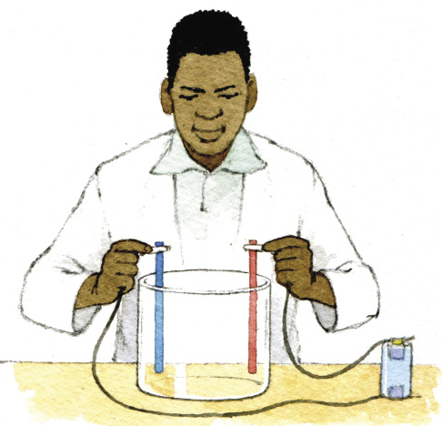
Figuur 8
- •
In die praktyk werk elektroplatering so (sien figuur 8 en 9):die voorwerp wat jy wil elektroplateer word aan die negatiewe kant van 'n sel met 'n draad gekoppel. Die metaal waarmee jy die voorwerp wil plateer, word met 'n draad aan die positiewe kant van die sel gekoppel. Plaas die voorwerp en die metaal (wat aan die drade vas is) in 'n houer gevul met water en 'n soutmengsel.
Die elektrisiteit en metaalmolekules beweeg dan van die positiewe kant na die negatiewe kant toe. Dit beteken dat daar na 'n tydjie 'n dun lagie metaal op die voorwerp begin vorm. Hoe langer mens hierdie proses laat voortduur, hoe dikker sal die metaallaag wees.
Tafelsout is een voorbeeld van 'n sout. Nie alle soute is eetbaar nie, maar alle soute bevat 'n metaal as een van die elemente waaruit hulle saamgestel is. Byvoorbeeld, tafelsout bestaan uit natrium ('n metaal) en chloor. Jy kan nie tafelsout vir elektroplatering gebruik nie.
Kopersulfaat is ook 'n sout. Dit bestaan uit koper ('n metaal) en swael. Kopersulfaat is egter BAIE GIFTIG. Mens kan dit vir elektroplatering gebruik, maar definitief nie om te eet nie!

Figuur 9: Hoe 'n elektroplateringstelsel aanmekaar gesit word
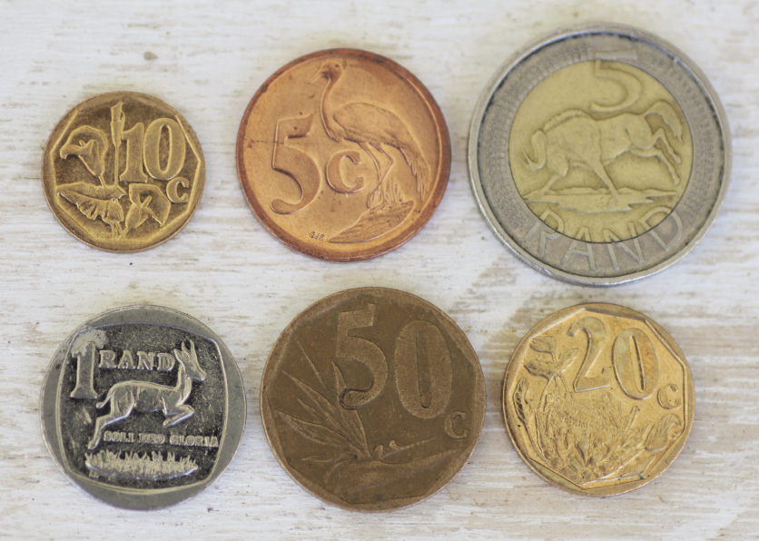
Figuur 10: Munte is voorbeelde van goedkoper metaal wat met duurder metale ge-elektroplateeris om mooi te lyk en langer te hou.
Werk in ‘n groep en ondersoek korrosie
In hierdie eksperiment gaan julle die effek van sout en water op gegalvaniseerde en ongegalvaniseerde metale ondersoek. Wanneer julle alles bymekaar het, gaan dit baie vinnig wees om die eksperiment voor te berei. Maar dan gaan julle die eksperiment op 'n veilige plek moet bêre waar julle die reaksie vir 'n week of selfs langer kan waarneem.
Jy het die volgende nodig vir hierdie aktiwiteit:
- • 'n plastiek of glashouer (dit moet nie 'n metaal houer wees nie);
- • genoeg water om hierdie houer vol te maak;
- • 'n pakkie tafelsout;
-
• twee
gegalvaniseerde metaalvoorwerpe,soos 'n gegalvaniseerde
spyker, 'n blikkie (sooswaarin 'n mens ingemaakte vis in
koop) of 'n stuksinkplaat (wenk: kyk na die laaste antwoord
op p11)
Blikkies soos die waarin ons kos koop is staal wat vertin is deur elektroplatering op staal.
- • iets grof of skerp waarmee jy die galvanisering van een van die voorwerpe kan afkrap (soos 'n spyker of skuurpapier of 'n ander stuk metaal).
Hoe om die eksperiment te doen:
- • Verhit die water en los die pakkie sout daarin op.
- • Gooi die water-en-sout-mengsel in die glas of plastiekhouer wanneer dit afgekoel het.
- • Plaas een van jou gegalvaniseerde metaal items net so in die water in die water.
- • Gebruik die growwe/skerp voorwerp om 'n stuk van die oppervlak van die ander voorwerp af te krap.
- • Plaas die tweede voorwerp ook in die water-en-sout-mengsel.
- • Laat albei voorwerpe vir ten minste 'n week in die water en die ander in die soutmengsel staan.
- • Haal albei voorwerpe elke dag uit om te sien wat gebeur.
Beantwoord die vrae hieronder:
1. Watter voorwerp begin eerste roes?
2. Hoe lank neem dit vir die metaal om te begin roes?
3. Is daar 'n verskil tussen die roes aan die begin van die week en die roes aan die einde van die week?
4. Waarom roes die ander voorwerp nie?

Wat het jy geleer?
Julle het van drie metodes geleer hoe mens ysterhoudende metale teen roes kan beskerm: verf, galvanisering en elektroplatering. Deur metale te beskerm en te behandel, kan die metale langer hou, wat beteken dat 'n mens minder hoef te myn. 'n Mens kan ook geroesde metaalvoorwerpe hergebruik as jy die roes skoonmaak en dit verf.
Deur metale te hergebruik en te herwin, kan ons 'n positiewe impak op die omgewing maak.

Volgende week
In die volgende hoofstuk gaan julle leer hoe om voedsel langer te laat hou deur dit te verwerk.
In die vorige hoofstuk het julle geleer hoe om metale te beskerm deur dit te verf, te galvaniseer en te elektroplateer. In hierdie hoofstuk gaan julle leer van verskillende maniere om kos te bewaar. Hoe graan gestoor word, hoe om kos in te lê, te droog en te sout is van die onderwerpe wat ons gaan bespreek.
8.1 Hoe graan gestoor word 110
8.2 Inlê van voedsel 114
8.3 Droog en sout 117
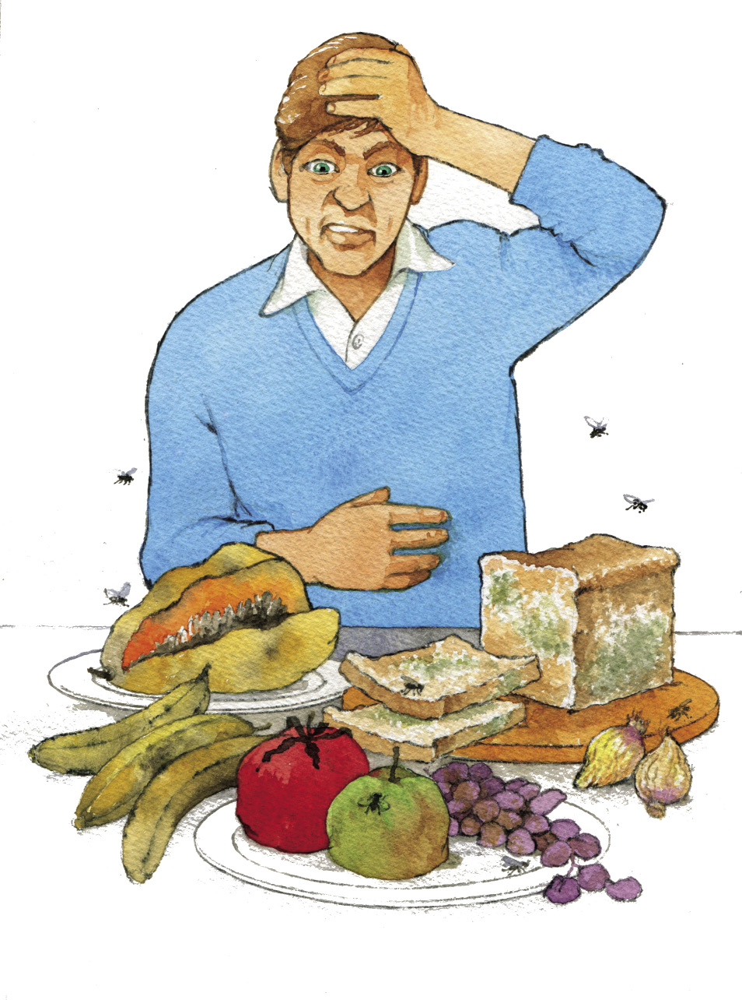
Figuur 1

Figuur 2
Figuur 3
8.1 Hoe graan gestoor word
Voedsel begin reeds bederf vanaf die oomblik sodra dit geoes word. Daarom is die bewaring van voedsel dwarsdeur die geskiedenis deel van alle kulture. Voedselbewaring het dit vir die antieke mense moontlik gemaak om op een plek te bly en 'n gemeenskap te vorm, in plaas daarvan om soos die Boesmans heeltyd te moes rondtrek. Die ontdekking van antieke voedselbewaring-metodes het beteken dat die antieke mense nie meer onmiddellik alles wat hulle gejag of geoes het dadelik moes eet nie. Hulle kon van die kos wat hulle gehad het, bewaar en bêre sodat hulle dit later kon eet.
Dit is interessant dat verskillende kulture regoor die wêreld hulle voedsel op dieselfde basiese metodes bewaar, naamlik om dit te kook, te vries, in te lê, te sout, te gis, te droog, en te vries.
Om voedsel te bewaar, is een van die oudste vorms van tegnologie. Mense het dit wat hulle verbou en gejag het, geëet. Hulle moes die kos baie goed bewaar om te voorkom dat dit sleg raak en hulle sodoende siek maak. Hulle moes ook aan maniere dink om kos te bewaar vir die tye wanneer hulle nie kon jag nie en ook wanneer daar geen oes was nie.
- •
Graan is 'n stapelvoedsel vir die meeste mense in die wêreld. Verskillende graansoorte word in verskillende dele van die wêreld geëet. In China en Japan is rys die stapelgraan wat die mense eet.
In Suid-Afrika is dit hoofsaaklik koring en mielies wat verbou en geëet word. Mielies word ook gebruik om 'n tipe gefermenteerde drank te brou, 'n tipe bier wat mense op spesiale geleenthede drink.
Stapelvoedsel is die voedsel wat die meeste geëet word deur 'n groep mense en dat daardie voedsel dus die grootste deel van hulle dieet uitmaak.
Strukture waarin graan gestoor word
Mense het nog altyd een of ander manier gevind om hulle graanprodukte te stoor. Verbeteringe in stoormetodes is oor die jare heen waargeneem en mense het geleer om die regte metodes te gebruik wat gepas is vir hulle betrokke situasie of omstandighede. Graan wat deur boere as 'n besigheid en op groot skaal vervaardig word, word in "silo's" gestoor. Silo's is groot sement of metaal strukture waarin die graan op baie plase gestoor word totdat dit gebruik of uitgevoer moet word. Die silo's hou die graan koel en beskerm dit teen vog, insekte en knaagdiere.
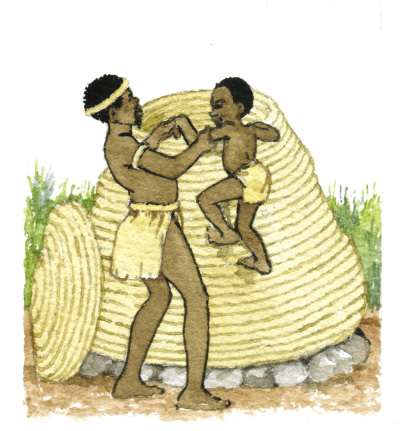
Figuur 4: 'n Tradisionele Zulu graansilo
'n Goeie houer vir die stoor van graan moet:
- • graan koel en droog hou;
- • graan beskerm teen insekte; en
- • graan teen rotte en muise beskerm.
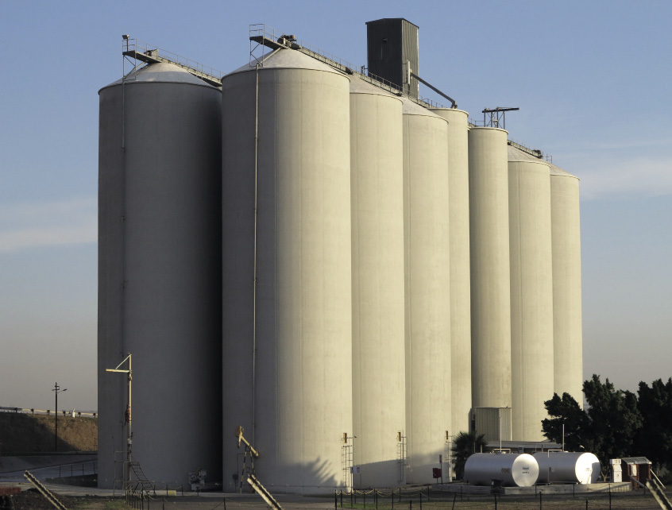Figuur 5: 'n Moderne industriële graansilo
Die proses om graan te stoor
Eerstens moet die graan geoes word. Bestaansboere (boere wat net vir hulle eie huishoudelike gebruik boer) doen dit met die hand. Figuur 6 wys hoe boere op groot industriële skaal oes deur die gebruik van 'n graanstroper en trekker.
Tweedens moet mens die eetbare deel van die graan (die saad) skei van die omhulsel wat die saad beskerm. Die omhulsel is oneetbaar en ons noem dit kaf.
Die proses om die kaf van die koring te skei, word genoem om te dors. Figuur 7 wys die saad en die omhulsel soos dit aan die plant lyk.
Figuur 6: Graan word op industriële skaal met 'n stroper en 'n trekker geoes.
Die derde stap word wan genoem. Wan is die proses waarmee die los saad van die kaf geskei word. Figuur 8 wys die eetbare sade wat van die kaf geskei is, in die man se hand, en die oneetbare kaf in die emmer.
Figuur7: Koring voor dit geoes, gedors en gewan (uitgesif) word.
Daar is verskeie tradisionele tegnieke om te wan, maar deesdae gebruik grootskaalse boere graanstropers om te oes, te dors en te wan.
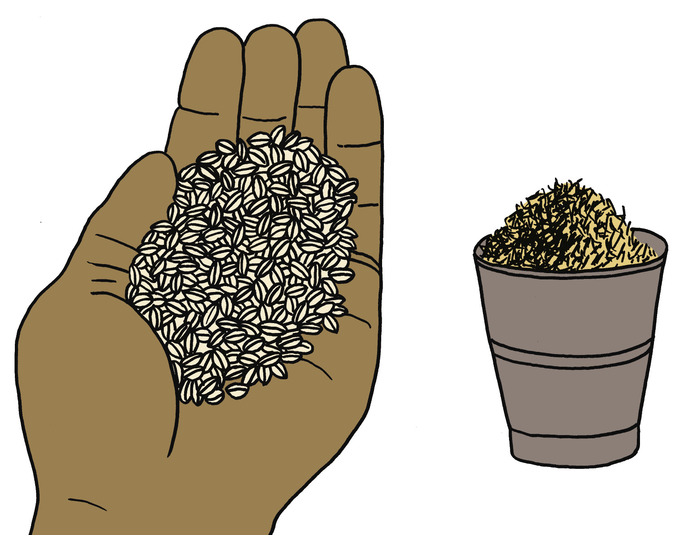
Figuur 8: Graansade wat van die kaf geskei is.
Vierdens word die graan gedroog om te verhoed dat fungus en bakterieë op die sade groei. Die ideale voginhoud vir graan is om en by 14%.
Deesdae gebruik mense graan-drogende masjiene (sien figuur 9) om die graan te droog, maar in die ou dae het mense die graan in die son gedroog.
Laastens word die graan gestoor. Die voginhoud en temperatuur van die lug is twee belangrike faktore.
Warm, vogtige lug is ideaal vir die groei van bakterieë en muf om die graan te verwoes, selfs al is die graan aanvanklik reg gedroog. Koue, droë lug sal help om die graan ongeskonde te hou.
Figuur 9: 'n Moderne graan droër
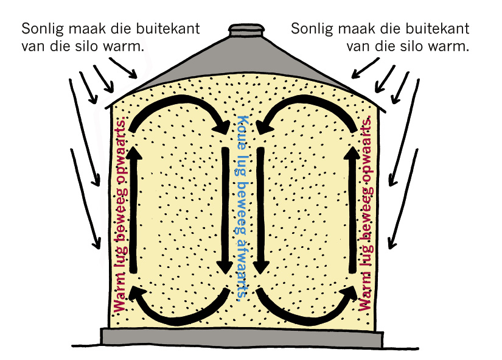
Figuur 10: Skematiese voorstelling van hoe lug in 'n graansilo beweeg
Daar is ook verskeie insekte wat graan kan beskadig, soos myte en kalanders. Myte is baie klein insekte wat graan eet. Kalanders is ook klein insekte wat hulle eiers binne-in die graansade lê. Wanneer die larwes uitbroei, eet hulle die sade.
Larwe: die stadium in 'n insek se lewe wanneer dit klaar uitgebroei het, maar voordat dit 'n volwasse insek is.
Knaagdiere, soos rotte en muise, kan ook groot skade aanrig. Hulle kan groot hoeveelhede graan eet as hulle nie beheer word nie. Hulle dra ook dodelike siektes oor waarmee hulle die graan besmet.
Jy kan nou nogal dink dat die stoor van groot hoeveelhede graan in 'n groot, moderne silo, 'n baie gekompliseerde proses is. Mens moet die lugvloei, vog en temperatuur, insekte en knaagdiere, bakterie en fungus alles probeer beheer. Dit is gelukkig makliker om klein hoeveelhede graan te stoor. Jy moet dit in 'n skoon, droë, lugdigte houer plaas en op 'n koel, droë plek sonder rotte, muise of direkte sonlig bêre.
8.2 Inlê van voedsel
Die meeste voedselprodukte bederf omdat daar mikro-organismes soos bakterieë, gis of muf teenwoordig is. Onthou net dat nie alle bakterieë skadelik is nie. Ons het "goeie" bakterieë nodig om sommige funksies in ons liggame te verrig en ook om sekere voedselprodukte, soos kaas en joghurt, te maak.
In die verlede moes mense voedsel stoor sodat dit eetbaar kon bly lank nadat dit geoes is. Daar was geen yskaste of vrieskaste nie, daarom moes mense vrugte en groente droog, sout, inlê, pekel of konfyt om te sorg dat die voedsel langer hou. Gedroogde, ingelegte en gesoute voedsel en konfyte het veroorsaak dat mense 'n groter verskeidenheid kosse en voedingstowwe in hulle dieet kon hê.
- •
Pekel is 'n waterige mengsel van asyn en sout.
Suid-Afrika het 'n paar gunsteling ingemaakte geregte. Atjar is 'n tradisionele Suid-Afrikaanse gereg wat meer as 'n honderd jaar gelede deur die Maleiers na die land gebring is. Dit kan as 'n bykos bedien word of saam met kerrie en mense regoor die land (veral in die Wes-kaap) eet dit graag. Atjar word gemaak van groente soos blomkool, wortels, kool en bone wat baie fyn gesny is en gemeng word met mosterd, borrie, koljander, asyn en suiker.
Wat ons vandag as tamatiesous ken, was oorspronklik 'n Oosterse pekelsous vir vis wat met die speseryroete na Europa geneem is, en later na Amerika, waar iemand suiker bygevoeg het. Speserye is by hierdie souse gevoeg om dit smaakliker te maak.
Blatjang is nog 'n gunsteling Suid-Afrikaanse ingemaakte dis wat gewoonlik van vrugte gemaak word.
Om kos in te lê, gebruik ons sout en water, of water en 'n suur, gewoonlik asyn. Groente en vis is twee van die mees algemene voedselsoorte wat so ingelê word. Die inlê-proses preserveer die voedsel omdat die soutwater 'n suurstofvrye omgewing skep. Die mikro-organismes in en om die kos kan dus nie groei en vermeerder nie en dus sal die kos nie sleg raak nie.
Die kos wat ingemaak word, word in 'n skoon glashouer geplaas. 'n Warm pekelsous word dan oor die kos gegiet tot dit die kos heeltemal bedek en die houer heeltemal vol is. 'n Skoon, digpassende deksel seël uiteindelik die houer. Ingemaakte kos kan vir baie maande eetbaar bly, afhangende van die tipe kos.
Ingemaakte kos het baie gewild geword. Daar is baie verskillende resepte beskikbaar en mense eksperimenteer graag met verskillende kombinasies van groente, kruie en speserye.
Figuur 11: Voorbeelde van ingelegde voedsel
Lê jou eie voedsel in
Jy het die volgende bestanddele nodig vir hierdie aktiwiteit:
- • 6 pekelkomkommers wat in die lengtedeur in die helfte gesny is;
- • 1 rooi soetrissie, opgesny;
- • 1 koppie water;
- • 1 koppie wit asyn;
- • 1 koppie wit suiker;
- • 2 ½ eetlepels pekel sout;
- • 2 geskilde knoffel huisies;
- • 12 swart heel peperkorrels;
- • ¼ teelepel gedroogde pekel; en
-
• 1 knypie
opgekapte rooi pepervlokkies.
'n Paar riglyne om voedsel in te lê:
- • Gebruik skoon bottels en deksels.
- • Dit is beter om wit asyn te gebruik omdat dit nie die groente verkleur soos wat bruin asyn doen nie.
- • Gebruik bestanddele wat so vars as moontlik is.
- •
1. Deur die bestanddele wat hierbo gelys is te gebruik, berei 'n instruksie lys voor wat jy aan 'n ander groep leerders gaan gee om hulle pekel voor te berei. Skryf jou instruksies wat die vloei van aktiwiteite van die begin tot die einde verduidelik puntsgewys neer.
6. Verhit en roer die pekel op die stoof totdat dit amper kook. Moet dit NIE kook nie.
2. Noem en beskryf kortliks drie voordele en drie nadele van hierdie metode van voedselpreservering.
1. Die voedsel kan vir ʼn lang tyd gestoor word sonder om dit in die yskas te plaas.

8.3 Droog en sout
Suid-Afrikaanse biltong is 'n ryk erfenis van innoverende Duitse setlaars gedurende die sewentiende eeu. Hulle het resepte vir gedroogde vleis uit Europa gebring. Hulle het die vleis in die son gedroog gedurende hulle trek oor suidelike Afrika.
Die basiese vleisspeserye was vrylik beskikbaar in die Kaap Kolonie. Die speserye wat gebruik word om biltong te maak, sluit 'n dramatiese mengsel van asyn, sout, suiker, koljander en ander beskikbare speserye in.
Droging is een van die oudste metodes van voedselpreservering.
Deur voedsel te droog, word genoegvog uit die vog gehaal om te verhoed dat die voedsel sleg word en verrot. Die water-inhoud van behoorlik gedroogde voedsel varieer tussen 5–25%, afhangende van die tipe voedsel.
Die woord biltong kom van die Duitse woord "bil" (kruisstuk) en "tong" (strook of tong).
Figure 12: Biltong
- •
Beantwoord die volgende vrae:
1. Verduidelik wat jy verstaan wat die doel is om voedsel te preserveer.
2. In Suid-Afrika is daar baie kulture en metodes van voedselpreservering. Noem een kultuur en voedseltipe wat hulle preserveer. Beskryf kortliks die proses wat hierdie kultuur volg om die voedsel te preserveer.
3. Verduidelik die proses van droging vir die doel om voedsel te preserveer.
4. Bespreek kortliks hoekom sout so belangrik is in die drogingsmetode van voedselpreservering.
Droog jou eie voedsel
Wenk:
Wanneer jy voedsel droog, is dit belangrik om die vog so gou as moontlik te verwyder, teen 'n temperatuur wat nie die geur, tekstuur en kleur van die voedsel sal beïnvloed nie.
Voordat jy aan enige voedsel raak moet jy jou hande deeglik was.
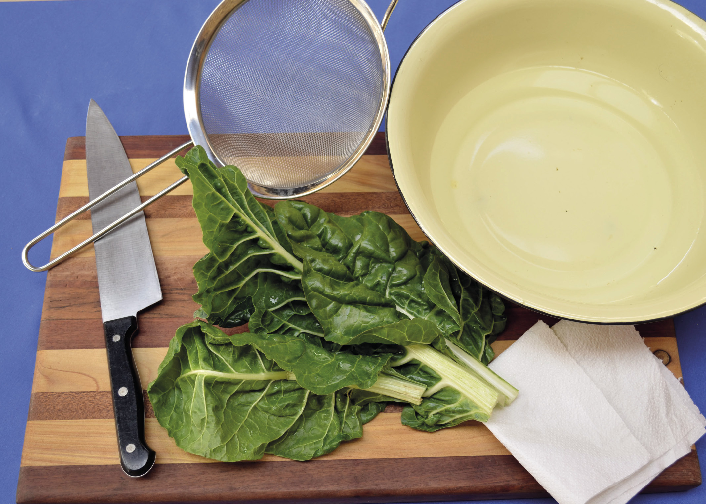
Figuur 13
Jy benodig die volgende items vir hierdie aktiwiteit:
- • spinasie,
- • koue water,
- • mes,
- • groot bak, en
- • papier handdoek.
Volg die volgende stappe:
- • Soek vars spinasie wat los of in bondels verkoop word. Kies spinasie wat krakerig en groen is.
- • Maak 'n groot bak vol met koue water en plaas die spinasie daarin.
- • Was die spinasie in die water om alle vuilis en gronddeeltjies af te kry.
- • Haal die spinasie uit die bak en hervul die bak met vars, skoon koue water. Hou aan om die spinasie in vars water af te spoeltotdat al die gronddeeltjies weg is
- • Haal die spinasie uit die water en plaas dit op 'n papierhanddoek.
- • Rol die spinasie in wors-vormpies en plaas 'n ander papierhanddoek bo-oor die spinasie. Druk versigtig af om die res van die vog van die spinasie te verwyder.
- • Plaas 'n skoon, droë papierhanddoek weer oor die spinasie en druk versigtig af om nog vog verwyder.
- • Plaas nou die voorbereide spinasierolle met papierhanddoek bo-oor op 'n sif en laat dit in die son staan vir 'n paar dae.
- • Plaas die gedroogde spinasie in 'n plastiese houer om te stoor totdat jy dit wil kook.
Skryf al jou waarnemings gedurende hierdie praktiese aktiwiteit neer:
1. Beskryf hoe die vars spinasie gelyk het.
Vars spinasie is donkergroen en pap. Voordat dit gewas is, kan dit vol grond en vuilis wees.
2. Lys al die stappe wat jy geneem het en verduidelik waarom jy hierdie stappe geneem het.
3. Hoe het die weersomstandighede jou droogproses beïnvloed?
4. Dui aan of jou eksperiment suksesvol was of nie. Motiveer jou antwoord.

Wat het jy geleer?
Jy het geleer hoe inheemse mense lank gelede aan innoverende maniere gedink het om kos te bewaar om dit langer te laat hou.
Jy geleer hoe die beginsels van graan stoor, pekel, en die droog en sout van voedsel bygedra het tot die verlenging van voedsel se raklewe.

Volgende week
Volgende week gaan jy meer leer oor vermindering, hergebruik en herwinning van plastiek. Dit het ten doel om die negatiewe impak wat plastiek op die omgewing het, te verminder.
In hierdie hoofstuk gaan jy oor verskillende tipes plastiek leer. Jy gaan ook leer dat plastiek herwin kan word en hoekom dit belangrik is dat plastiek herwin word.
9.1 Wat is plastiek en wat is hulle eienskappe? 122
9.2 Tipe plastiek, herwinning en identifikasiekodes 125
9.3 Wat het jy geleer? 128
Nota aan die onderwyser:
Leerders moet plastiekprodukte en -houers na die skool bring vir hierdie week se aktiwiteite. Figuur 1 stel 'n paar tipes plastiekprodukte voor wat die leerders kan bring.
Dit is belangrik dat leerders 'n wye verskeidenheid plastiekprodukte bring. Hulle moet die plastiekprodukte, wat herwinningskodes op die onderkant van die houers het, bring. Die kodes help om die tipe plastiek waarvan die houers gemaak is, te identifiseer.
Die versameling produkte moet helder, deurskynende, en donker tipes plastiek insluit, asook harde en sagte tipes plastiek. 'n Paar voorbeelde van wat leerders na die skool kan bring, is koeldrankbottels, melkbottels, grondbootjiebotterhouers, sjampoebottels, polistireenkoppies, margarienhouers, plastiekborde, plastiek eetgerei, vrieskas sakkies, plastiekplakkies, kamme, kosbakke, en/of meetkundedriehoeke.
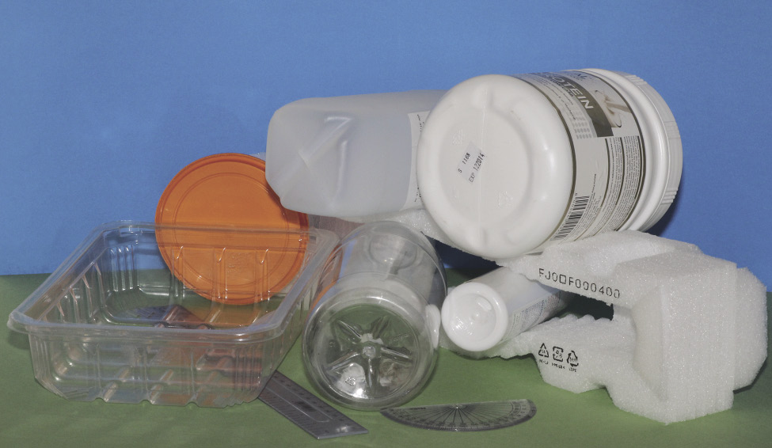
Figuur 1: Bring plastiek items soos hierdie skool toe vir hierdie week se lesse.
9.1 Wat is plastiek en wat is hulle eienskappe?
Tot omtrent 'n 100 jaar gelede is die meeste klere en ook die meeste gereedskap en toestelle van plant- of diere-materiaal, soos katoen, wol, hout, dierevel, en vere gemaak. Toe het chemiese wetenskaplikes maniere ontdek om sintetiese materiaal te maak wat soortgelyke eienskappe het as die van natuurlike materiaal, en soms met bruikbare eienskappe wat natuurlike materiale nie het nie. Die meeste van hierdie sintetiese materiale word van minerale olies gemaak, en die meeste van hulle word plastiek genoem. Sintetiese materiale is gewoonlik goedkoper en ligter as natuurlike materiale met dieselfde eienskappe, en fabrieke kan die sintetiese materiaal in unieke vorms giet.
Wanneer jy van naderby na 'n stuk lap kyk, sal jy sien dat dit geweef is met baie dun drade, soos baie dun stukke tou. Deur 'n mikroskoop te gebruik, kan jy selfs nader kyk. Jy sal dan sien dat elke draad van verskillende lang, dun stukke gemaak is en hierdie stukke is inmekaar gehak of gedraai. Hierdie lang dun stukke word vesels genoem. In hierdie vlakbyopname-foto hieronder, kan jy die plantvesels waarvan 'n spesifieke materiaal gemaak is, sien.
Liniale is vroeër jare van hout gemaak, maar word deesdae van plastiek gemaak. Emmers is eers van hout gemaak, en toe van gegalvaniseerde staal, maar deesdae word hulle ook van plastiek gemaak. Melk is vroeër jare in swaar glas- of staalhouers gebottel, maar word nou in plastiekbottels gebottel. Toue is vroeër jare van garingboomvesels gevleg, maar die meeste toue word vandag van plastiekvesels gemaak. Motors is meestal van staal, hout en leer gemaak, maar deesdae word baie onderdele van plastiek gemaak.
Figuur 2: ‘n Vlakbyopname-foto van plantvesels wat gevleg en geweef is om 'n materiaal te maak
Oral om jou is daar voorwerpe wat van verskillende tipes plastiek gemaak is. Kyk na jou skoensole, jou pen en liniaal. In die winter dra jy dalk 'n wollerige baadjie wat regtig voel soos wol. Daardie wollerige materiaal is eintlik van plastiekvesels gemaak. Baie klere en die meeste matte word van plastiekvesels gemaak.
Sintetiese materiale het ook nadele. Jy het in graad 8, kwartaal 3, hoofstuk 8, geleer dat meeste plastiek nie bio-afbreekbaar soos natuurlik materiale is nie. Dit beteken dat plastiekafval vir baie lank hou.
Figuur 3: 'n Fleece-kombers word gemaak van die vesels van 'n tipe plastiek wat polistireen genoem word.
Plastiek is voorbeelde van polimere. 'n Polimeer is 'n materiaal wat van molekules gemaak is wat koolstofatome, waterstofatome, en ander atome bevat wat in lang kettings aan mekaar verbind is. Katoen, wol, leer, hare, stysel, hout en rubber is voorbeelde van natuurlike polimere. Die molekule kettings verbind op verskillende maniere sodat daar baie verskillende polimere met verskillende eienskappe is.
Plastiek is mensgemaakte (sintetiese) polimere. Hulle word meestal van minerale olies gemaak omdat die molekules in hierdie olie kettings, koolstofatoom kettings is, maar dat hierdie kettings korter is as die wat in plastiek voorkom
Die woord plastiek is oorspronklik gebruik om materiale soos rubber se eienskappe te beskryf, naamlik dat dit 'n nuwe vorm gegee kan word. Die meeste sintetiese polimere het hierdie eienskappe en daarom is die naam "plastiek" aan hulle gegee.
Molekules word gemaak van atome wat aan mekaar geheg is. Jy weet reeds van Natuurlike Wetenskap dat molekules so klein is dat mens dit nie eers met 'n mikroskoop kan sien nie.
Verskillende eienskappe van plastiek
Afhangende van die tipe plastiek en die vorm waarin dit gegiet is, kan plastiek dalk 'n paar van die volgende eienskappe besit:
- • Deurskynend beteken dat jy duidelik deur die plastiek kan sien.
- • Ligdeurlatend beteken dat lig daardeur kan skyn selfs al kan jy nie deur die plastiek sien nie.
- • Sterk beteken dat die plastiek nie sal breek of splinter wanneer dit geslaan of laat val word nie.
- • Elasties beteken dat jy die plastiek redelik ver kan rek en dat dit weer na die oorspronklike vorm terugkeer.
- • Buigbaar beteken dat die plastiek kan buig sonder om te breek.
- • Onbuigbaar beteken dat die plastiek nie sal buig of rek nie, maar as jy genoeg krag toepas om die plastiek te buig en rek, sal dit breek of selfs versplinter.
- • Hittewerend beteken dat die plastiek nie maklik sal smelt nie.
- • Brandwerend beteken dat die plastiek nie maklik sal brand nie.
- • Waterdig beteken dat water nie deur die plastiek sal vloei nie.
- • Skuim beteken dat die plastiek geprosesseer word deur dit met klein lugborrels te vul.
- • Elektries geïsoleer beteken dat elektrisiteit nie deur die plastiek gelei kan word nie.
- • Termies geïsoleer beteken dat hitte nie maklik deur die plastiek gelei kan word nie.
In baie van hierdie gevalle kan jy nie net sê dat die plastiek 'n spesifieke eienskap het of nie 'n spesifieke eienskap het nie. Jy kan byvoorbeeld nie net sê 'n tipe plastiek is buigbaar nie. Jy moet kan sê hoe buigbaar dit is, byvoorbeeld baie buigbaar of slegs effens buigbaar.
Ondersoek eienskappe van plastiek voorwerpe
Werk in spanne van drie of vier.
Vir hierdie aktiwiteit het jou onderwyser jou gevra om verskillende plastiek voorwerpe skool toe te bring.
Elke span moet twee van die voorwerpe neem en hulle eienskappe beskryf. Skryf die naam van die voorwerp neer en skryf dan die eienskappe langsaan.
1. Voorwerp 1:
2. Voorwerp 2
Ruil nou jou twee plastiek voorwerpe om met die van die 'n ander span wat verskillende plastiek voorwerpe as jou span het. Skryf dan die name en eienskappe van die ander span se voorwerpe neer.
3. Voorwerp 3:
4. Voorwerp 4:
 9.2 Tipes plastiek, herwinning
en identifikasiekodes
9.2 Tipes plastiek, herwinning
en identifikasiekodes
Termoplastiese en termoverharde plastiek
Sommige plastiek is sag of soortgelyk aan vloeistof, totdat jy dit op 'n spesifieke manier verhit, of totdat jy 'n ander chemikalieë daarby meng. Dit "set" of word hard en rigied. Nadat dit geset het, kan jy dit nie weer sag maak deur dit te verhit nie. Jy kan dit dus nie in ander produkte vervorm nie. Dit sal wel brand, maar dit sal nie weer sag word nie. Plastiek soos hierdie word termoverharde plastiek genoem.
Voorbeelde hiervan is epoksi-hars gom, skoensole, motorbande, elektriese kragproppe, pothandvatsels, elektroniese stroombane en kombuis werkoppervlaktes. Termoverharde plastiek kan nie herwin word deur dit te verhit nie. Dit kan wel weer teruggeskakel word na olie toe, deur 'n hoë-temperatuurproses wat "pirolise" genoem word.
Veiligheidswaarskuwing:
Dra beskermende hittewerende handskoene, beskermende bril en brandwerende klere indien jy gaan probeer om plastiek te smelt; gesmelte plastiek kan spat en kan erge brandwonde veroorsaak.
Moet nooit probeer om plastiek te smelt met 'n vlam nie; die plastiek kan brand en giftige gasse vrystel.
Ander tipes plastiek smelt wanneer dit verhit word en kan dan in nuwe produkte vervorm word. Dit word termoplastiese plastiek genoem. Koeldrank- en skoonmaakmiddelbottels is termoplasties; indien jy kookwater daarin gooi kan jy die vorm verander.
Waarom moet ons plastiek herwin?
Afvalplastiek in die omgewing is 'n groot probleem. Die meeste tipes plastiek is nie bio-afbreekbaar nie en sal vir honderde jare in die omgewing wees.
In die foto hieronder kan jy 'n grondopvulling of afvalhoop sien. Afvalhope is gewoonlik naby stede geleë sodat vullisverwydering-trokke nie te ver hoef te ry om afval weg te gooi nie. Dit beteken dat mense nooit huise op daardie grond kan bou of landerye op die grond kan maak nie.
Enige materiale wat in 'n afvalhope beland, sal nooit weer gebruik word nie. Mense gaan meer rou materiale soos olie, steenkool, staal, hout of glas uit die aarde moet uithaal. Hulle sal dan meer steenkool moet brand om elektrisiteit op te wek om die rou materiale te prosesseer.
Nie alle plastiek beland in afvalhope nie. Baie plastiek bly net daar lê waar mense dit gegooi het, of dit word in riviere gegooi en beland dan in die oseaan.
Figuur 4: Plastiekafval op die kus. (Hierdie foto is in Hawaii geneem waar daar swart vulkaniese rotse op die kuslyn is.)
In sommige dele van die oseaan veroorsaak die wind dat die water in sirkels op een plek vloei. Hierdie areas is baie groter in Suid-Afrika. Die areas word "oseaankolke" genoem. Hier kom miljoene drywende plastiekbottels, sakke en plastiekvlokkies van min of meer hierdie blokkie se grootte bymekaar.
Skilpaaie kan die plastieksakke met jellievisse verwar en dit insluk, wat veroorsaak dat die skilpaaie doodgaan. Groot en klein visse sluk die klein plastiekvlokkies in. Seevoëls eet die vis en die plastiek in die vis veroorsaak die dood van die seevoëls.
Om te herwin beteken om afvalprodukte te prosesseer en sodoende nuwe produkte daarvan te maak.
Plastiek wat in die omgewing gegooi word, is dus 'n baie groot probleem. Maar baie van hierdie plastiek kan herwin word.
1. Skryf twee redes neer waarom ons plastiek items moet herwin.
Verskillende tipes plastiek benodig verskillende prosesse om herwin te word
Afval van verskillende tipes plastiek moet sorteer word sodat elke tipe plastiek apart herwin kan word. Vervaardigers het saamgestem om sekere kodes te gebruik wat aandui van watter tipe plastiek die produk gemaak is.
|
Kodes en name |
Voorbeelde van produkte |
Eienskappe |
Herwonne produkte |
|
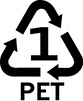 poliëster |
koeldrankbottels |
helder; sterk; goeie versperring vir vloeistowwe en gasse; hittewerend |
vesels om materiale vir klere, sakke en matte te maak; voedsel en koeldrankhouers |
|
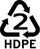 hoë-digtheid poliëtileen |
bottels vir melk, sappe, water en wasgoedmiddels |
ietwat rigied; sterk; weerstandig teen chemikalieë; goeie versperring vir vloeistowwe en gasse |
bottels; pype; emmers; kratte; blompotte; asdromme; plastiekplanke; vloerteëls |
|
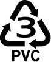 polivinielchloried |
pype; omhulsels van elektriese drade |
weerstandig teen chemikalieë; elektries isolerend; sterk; kan rigied of buigbaar wees |
geute; vloerteëls en matte; elektriese bokse; tuinslange |
|
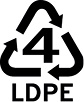 lae-digtheid poliëtileen |
dun plastieklae om byvoorbeeld kos te bedek of boeke mee oor te trek; buigbare deksels en bottels |
buigbaar; sterk; goed om dinge te seël; weerstandig teen vog |
asdromsakke; vloerteëls; asdromme |
|
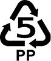 polipropileen |
groot voorwerpe wat gegiet is, byvoorbeeld motoronderdele |
weerstandig teen chemikalieë; sterk; hittewerend; versperring teen vog |
motor battery omhulsels; besems en borsels; asdromme; skinkborde |
|
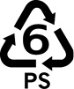 polistireen |
beskermende verpakking; weggooibare bekers; skinkborde; hitte- isolering (veral in dakke) |
kan rigied of gespons wees; lae smeltpunt; wanneer gespons 'n baie goeie hitte-isoleerder |
plate vir ligskakelaars; liniale; hitte- isolering; sponsverpakking |
|
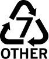 ander tipes plastiek, of meer as een tipe plastiek wat in een produk gebruik is |
akriel of perspeks- velle (kan gebruik word as vervanging van vensters); "ABS" vir die maak van motorbuffers |
afhangende van die tipe plastiek; "ABS" het baie goeie skokabsorberende eienskappe |
plastiekplanke |
9.3 Wat het jy geleer?
Identifiseer die tipes plastiek op die tafel
Kyk weer na die vier plastiekprodukte wat jou span in die aktiwiteit by afdeling 9.1 bestudeer het. Draai die items onderstebo en probeer om die simbool vir die herwinningskode te vind.
1. Voltooi die tabel hieronder:
|
Kode en naam van die tipe plastiek |
Eienskappe |
Watter produkte kan van hierdie herwonne materiaal gemaak word? |
|
|
Voorwerp 1 |
|||
|
Voorwerp 2 |
|||
|
Voorwerp 3 |
|||
|
Voorwerp 4 |
2. Hoekom verkies vervaardigers gereeld om hulle produkte van plastiek te maak?
3. Waarom plaas vervaardigers die herwinningskodes op die bodem van die houers?
4. Waarom gebruik hulle nie net dieselfde tipe plastiek vir alles wat vervaardig word nie?
5. Dink aan drie voorwerpe wat nie van plastiek gemaak kan word nie.

Volgende week
In die volgende hoofstuk gaan jy leer hoe plastiek herwin word om nuwe produkte mee te maak.
In hierdie hoofstuk gaan jy leer hoe plastiek-afval herwin word om nuwe produkte te maak.
10.1 Formering van herwonne plastiekkorrels na nuwe produkte 132
10.2 Herwinning van plastiek om nuwe produkte te maak 135
10.3 Wat het jy geleer? 138
10.1 Formering van herwonne plastiekkorrels na nuwe produkte
Daar is twee stappe betrokke in die maak van plastiekbottels; inspuitvormwerk en blaasvormwerk.
Stap 1: Inspuitvormwerk om voorafvorms van korrels te maak
Inspuitvormwerk word gebruik om plastiek "voorafvorms" van bottels te maak. Voorafvorms is soos klein bottels met baie dik wande wat reeds die nek en skroefdraad van die finale bottel het. Figuur 1 wys die voorafvorm van 'n plastiekbottel.
Figuur 2 wys die inspuitvorm-werkmasjien op verskillende tye van die inspuitvormwerkproses.
In hierdie diagram is die plastiek diegekleurde materiaal. Die rou materiaal wat in die masjien ingaan is amper-ronde stukkies plastiek wat korrels genoem word. Hulle is aanvanklik hard omdat hulle nog nie met hitte behandel is nie, en word in blou aangedui op die diagram. Die plastiek moet sag en warm wees vir die inspuitingsproses om te werk.
Die korrels word vorentoe gedruk deur 'n skroef wat deur 'n motor gedraai word. Die korrels word terselfdertyd verhit totdat hulle smelt. Die draaikrag van die skroef veroorsaak druk wat die gesmelte plastiek in die vorm indruk of inspuit. Sodra die vorm gevul is, sal opening van die vorm waar die gesmelte plastiek ingespuit is, toegemaak word, en die vorm word laat staan om af te koel.
Figuur 1: 'n Voorafvorm van 'n plastiekbottel
Die plastiek in die vorm stol soos wat dit afkoel. Sodra dit genoegsaam afgekoel het, word die twee helftes van die vorm oopgemaak sodat die voorafvorm wat gemaak is, uitgehaal kan word.
Beantwoord die volgende vrae wat verband hou met figuur 2.
1. Plaas 'n byskrif by die vorm sodra jy dit sien.
2. Waar sal jy die verhitter op die masjien plaas om die plastiek korrels te smelt? Teken 'n ekstra onderdeel of onderdele by om aan te dui waar die verhitter moet wees en plaas 'n byskrif by.
3. Kyk mooi na 'n plastiekbottel. Jy sal 'n baie dun rant sien waar die twee dele van die vorms verbind is. Indien jy dit nie kan sien nie, voel met jou vinger rondom die nek van die bottel. Waarom is die vorm se lyn aan albei kante van die bottelnek?
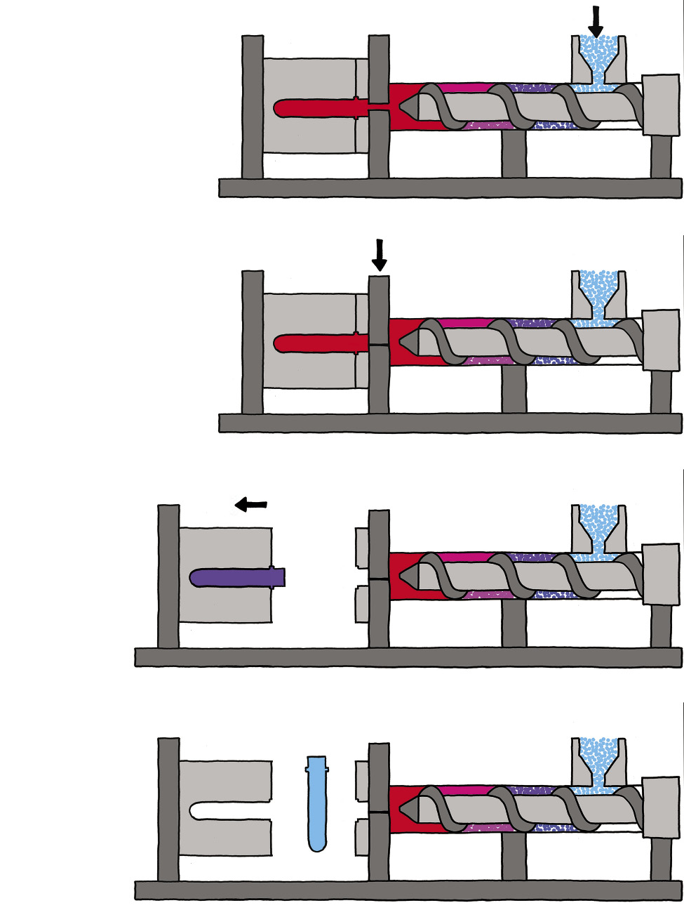Figuur 2: Die inspuitvormwerkproses

Stap 2: Blaasvormwerk om die voorafvorms in bottels te vorm
Die voorafvorm gaan volgende na blaasvormwerkmasjien. Hierdie masjien blaas warm lug onder hoë druk in die voorafvorm in. Dit verhit die onderste deel van die voorafvorm sodat dit sag word en van vorm kan verander. Die hoë lugdruk forseer die wande van die voorafvorm om uit te sit en die nuwe vorm te vul, amper soos om 'n ballon op te blaas.
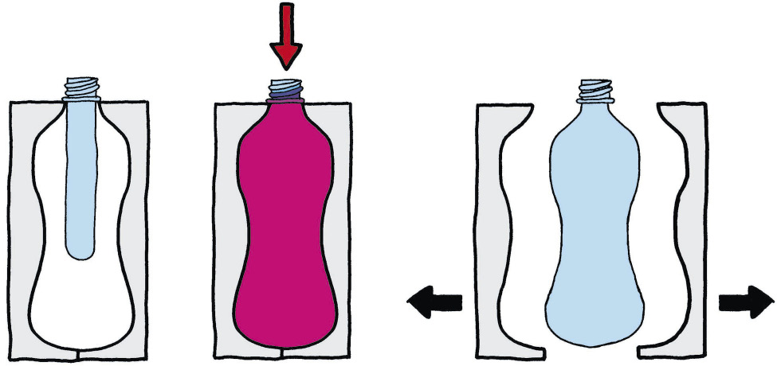
Figuur 3: Blaasvormwerk van 'n voorafvorm om 'n plastiekbottel te maak
Dieselfde tipe voorafvorm kan in enige vorm bottel gemaak word, aangesien dit in verskillende vorms geblaas kan word. Al die bottels het wel dieselfde aanskroefprop.
1. Waarom sal al die verskillende vorm bottels op dieselfde aanskroefprop pas?

10.2 Herwinning van plastiek om nuwe produkte te maak
In hoofstuk 9 het jy geleer waarom ons plastiekhouers en ander produkte moet herwin. In hierdie les gaan jy leer hoe PET plastiek herwin kan word om nuwe, rou materiaal te maak.
Gevallestudie: Die sikliese proses van plastiekherwinning
1. Waarom moet plastiek in verskillende tipes sorteer word voordat dit herwin kan word?
2. Hoe help die herwinningskodes op die plastiekhouers om dit te sorteer?
3. Houers bestaan nooit net uit plastiek nie. Kyk mooi na 'n houer. Watter ander materiale kan jy vind? Jy kan ook na die houers kyk wat jou klasmaats skool toe gebring het.
4. Is al die plastiekhouers in die afvalbak skoon? Is dit belangrik?
5. Plastiekbottels en ander houers neem baie spasie op. Waarom is dit 'n probleem?
6. Noem vier stappe waardeur plastiek moet gaan voordat dit geskik is om in nuwe produkte verander te word.
Die illustrasie op die volgende bladsy wys die plastiekherwinningsproses.
Elke tipe plastiek-afval word saamgepers in bale sodat dit maklik vervoer kan word. By die herwinningsfabriek word die plastiek-afval in klein stukkies versnipper, sodat dit makliker is om te hanteer en te was.
7. Voltooi die stelseldiagram hieronder deur beskrywings van die verskillende stappe van die herwinningsproses by te skryf. Wenk: Wanneer iets herwin word, beteken dit dat die uitset ook die inset is, aangesien die proses siklies is.
|
|
Figuur 4: Stelseldiagram van die plastiekbottel herwinningsproses
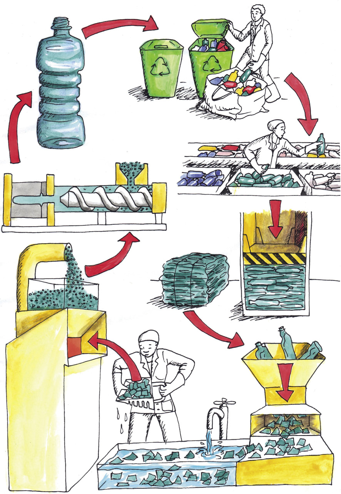
Figuur 5: Die stappe nodig om afval-plastiek na nuwe produkte te verander

10.3 Wat het jy geleer?
1. Wat is die rou materiaal vir die bottels in hierdie proses?
2. Hoe kan verbruikers en huiseienaars dit makliker maak vir die herwinningsfabrieke om die plastiekprodukte te prosesseer en nuwe bottels te maak?
3. 'n Vervaardiger kan een tipe voorafvorm koop en dan verskillende vorms bottels maak. Hoe kan dit gedoen word?
4. Watter tipe formering dink jy word gebruik in die maak van plastiekstoele?
5. Wat is die verskil tussen inspuitvormwerk en blaasvormwerk?
Volgende week
In die komende drie weke gaan jy jou Mini-PAT vir hierdie kwartaal doen. Jy gaan ou plastiekbottels vir 'n nuwe doel hergebruik. Hierdie bottels moet egter verander word, daarom gaan jy die ou bottels gebruik om nuwe produkte te ontwerp en maak.